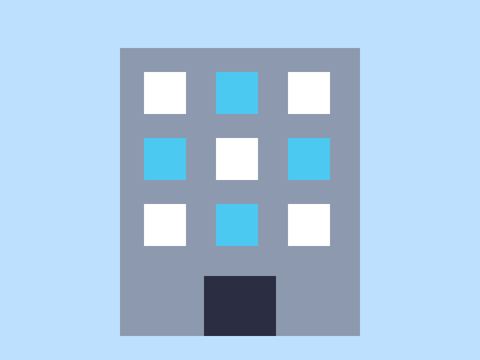

homeish
Stuff
Things
More
★
wow
CASE STUDY 2 of 3: CarePath Onboarding (shipped as a skateboard campaign)
Client asked for a healthcare onboarding flow so new patients could finish intake without calling the front desk. I did not write a problem statement. I opened a new file and made stickers.
solution
The solution I shipped was a skateboard brand campaign with neon stickers. I realize those are different industries. The sticker said "LIVE LAUGH LOAD" which tested well in a group chat. I cannot show the UI because of NDA, and also because I never took screenshots. Prototype: a Figma file named `final-FINAL-v7-use-this`.

this text covers the image on purpose
research / lunch
Lunch update: I switched to a salad. It had cranberries. Cranberries are red which is why the campaign is pink. This is the insight. The rest of the case study is just this paragraph again: I switched to a salad. It had cranberries. Cranberries are red which is why the campaign is pink. This is the insight. I switched to a salad. It had cranberries.
results
Results: people liked it, I think. One metric moved. Another metric did not, which we decided was also good. Drop-off went... somewhere. It went well. Next steps: none, we launched.
time-on-task: vibes errors: decorative SUS: I forgot to run it
also
keep clicking things (case study 3)